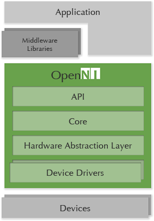

Figure 1. 架構圖（圖片來源：About OpenNI）
從架構圖可以觀察到幾點：
-
API 只是 framework 的一環而已。
-
middlewares 一樣是架構在 OpenNI 之上，但可以大幅簡化應用程式的開發。
-
由於 OpenNI 這一層，不論是應用程式本身或 middlewares 都不會綁死在特定的硬體設備。
-
OpenNI 直接提供不同硬體設備的的 drivers。
-
透過 OpenNI，可以在不同平台（Windows、Mac OS X、Linux）上存取 Kinect。
-
event-driven programming, multi-sensor support
-
voice recognition、body motion tracking、gestures